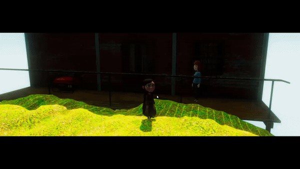
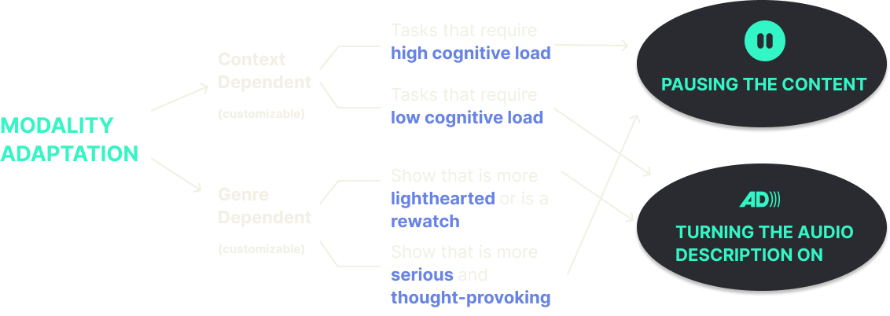

Adaptive Watch uses real-time stylistic changes to the plot-line, weather, music, and color grading to adapt the content according to the user's emotion and personal viewing preferences to enhance the TV viewing experience.
Our previous research found that people have a desire to immerse themselves in virtual environments based on their mood or current emotional state. Whether your goal is to wallow in their sadness or counteract it with something happy, our system will be able to adapt the plot-line and the scene styles to better your experiences. Play around with our interactive prototype and take a look at how you would be able to enjoy content that is customized to your emotional preferences.
- Netflix
- Hulu
- Disney+
- Amazon Prime
Growing numbers of users have begun to think of TV as a secondary, or background activity. Part of what makes it so appealing is that it requires no active input once you get started watching. However, there are times when you would need to manually pause the show in order to reply to a message or check on the food. Our system detects your activity automatically while you are watching tv and adapts the content accordingly, either pausing or changing to audio narration format, so you never miss any part of the show.

Personal data privacy concerns came up several times in our user study and the majority of the users want to be in the driver’s seat to determine when and how the content would be adapted. With our AdaptiveWatch system, you can toggle on and off the system whenever you want to during your viewing session, so you can enjoy contents from the artist’s original intention as well personalized versions tailored to your preferences.
Your historical viewing data will be stored safely on a local system that is dedicated to enhancing your tv viewing experience, and you will be able to control when and how these data can be used for your viewing experience.
We put a spin on the classic European fairy tale Little Red Riding Hood. The narrative that we all know- a little young girl who visited her grandmother in the woods but they both got eaten by a wolf, and then were rescued by a hunter passing by- is the base narrative that we have. On top of the base narrative, we created three other narratives which are sad, horror, and happy in order to simulate on-the-fly plot adaptation based on users’ emotional inputs. Aside from the plot-line adaption, we have also incorporated stylistic changes including weather, background music, and colors to see which change(s) users prefer to have during their viewing session.